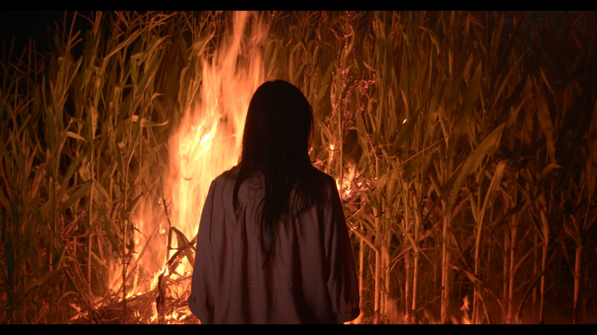

Narrative / Documentary
Stories made
with people.
Directing, producing, editing, color and sound — from narrative shorts to feature documentary.
Recognition / 荣誉
Alone / 孤
Selected work
Film / Documentary
Choose a project for the story, credits, stills and viewing links.